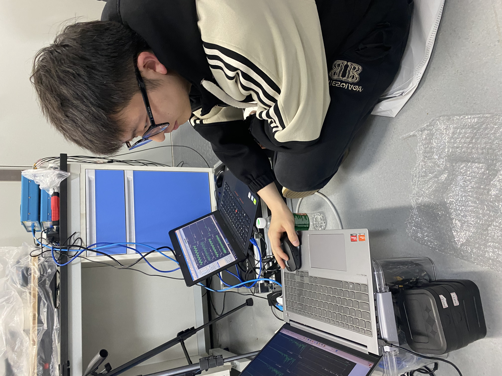

People
Group Members
Current researchers, students, visitors, and alumni of the NDT & SHM Group.
Principal Investigator
PhD Students
Clint (Xiaodong) Han
PhD student
Predictive maintenance and condition monitoring of railway track systems.
Yanxin Si
PhD student
System identification, data-driven modelling, and modal analysis of complex engineering systems.
Eddie (Hailong) Liu
PhD student
Physics-informed neural networks for structural health monitoring and dynamic response prediction.
Kun Xie
PhD student
Camera-based structural vibration measurement, motion magnification, and full-field dynamic analysis.
Kamiel Politiek
PhD student
Nonlinear ultrasonic resonance testing for quality assessment of metal additive manufactured components.
Wenbo Zhang
PhD student
Nonlinear modal analysis and nonlinear data-driven modelling for complex structural dynamics.
Xiangyu Wang
PhD student
Advanced active thermography NDT for metals and composites.
Sijie Wang
PhD student
Hydrodynamic simulation of fish locomotion and behaviour using CFD and flow-structure interaction modelling.

Qingsheng Liu
PhD student
Camera-based motion analysis and vibration monitoring of wind turbine structures.
Jiayu Wang
PhD student
Drone-based structural health monitoring and autonomous inspection of engineering structures.
Yueqing Wang
PhD student
Computer vision, LiDAR-vision fusion, traffic and transportation engineering.
Visiting PhD Students
Jie Wang
Visiting PhD student, Hunan University, China
Quantum neural networks and vision transformers for fault diagnosis of mechanical bearing systems.
Lei Han
Visiting PhD student, Beijing Jiaotong University, China
Intelligent operation and maintenance of rail infrastructure, ground-penetrating radar, and machine learning.
Yong Wang
Visiting PhD student, Hunan University, China
Physics-informed neural networks in ground-penetrating radar.
Seyed Ahmad Taghizadeh
Visiting PhD student, Free University of Bozen-Bolzano, Italy
Deep learning-based infrared thermography for non-destructive testing of composite structures.
Current Master and Design Students
Marco Zekveld
Optimal lathing settings for contact lens manufacturing using ID-DMD.
Yuval Swank
Ultrasonic resonance testing solution for metal additive manufacturing parts.
Rick Hulleman
Nonlinear dynamic behavior study on high precision lathing machine.
Alumni
Master Alumni
- Mathijs Neerhof - Transfer learning and multi-signal fusion for automated tool wear classification in precision manufacturing.
- Dayon Benning - Stability lobe modeling for SPDT of contact lenses.
- Justin de Groot - Computer vision-aided structural vibration tracking and analysis.
- Arjan van der Laan - Data-driven acoustic inspection of tool wear status.
- Stijn Eikens - Image acquisition in tool wear detection for the production of contact lenses.
Bachelor Alumni
- Huib van der Veen - Non-contact vision-based structural vibration measurements.
- Steven Boon - Experimental modal analysis of beam structures through data-driven modelling.
- Filip Schultink - Hybrid predictive maintenance framework for a 2-DOF robotic arm.